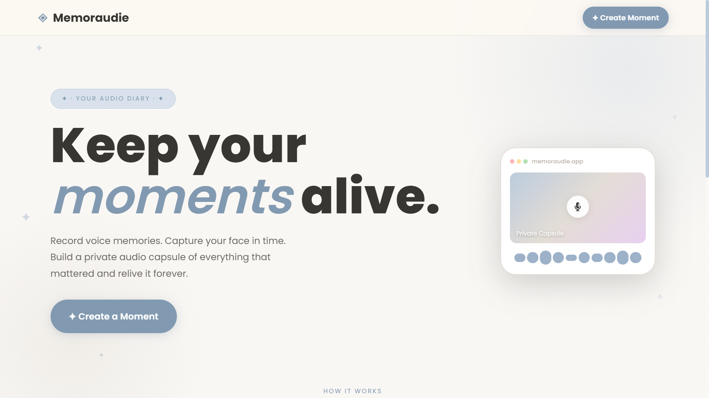

Memoraudie: Digital Audio Guestbook
A digital audio archiving platform engineered with Native PHP and MySQL, featuring browser recording via Web Audio API and automated server-side FFmpeg transcoding.
The Challenge
Traditional digital guestbooks or photo journals often fail to capture genuine human emotions and are prone to manipulated or pre-recorded uploads, losing the essence of the actual moment.
The Solution & Technical Decisions
Built a digital archiving platform that strictly enforces an on-the-spot recording architecture. To guarantee authenticity, the system rejects pre-recorded media uploads. I engineered a server-side FFmpeg pipeline via PHP CLI to automatically transcode browser-captured WebM audio into MP3s, embedding cover art and ID3v2 metadata in real-time before securely storing them using a relative path architecture. While initial academic evaluation was successfully delivered on a self-hosted local XAMPP environment, the platform is currently undergoing public cloud testing using AWS Free Tier and Vercel, with the architecture prepared for future scalable infrastructure migration.
Role & Contribution
Solo Full-Stack Engineer
Architected and engineered the end-to-end platform, from relational database schema and Native PHP JSON APIs to browser-based Web Audio recording and automated server-side FFmpeg media transcoding.